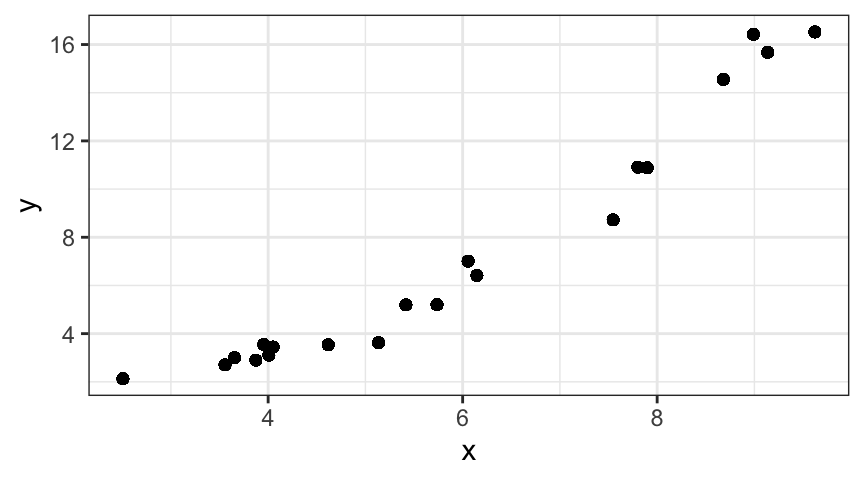
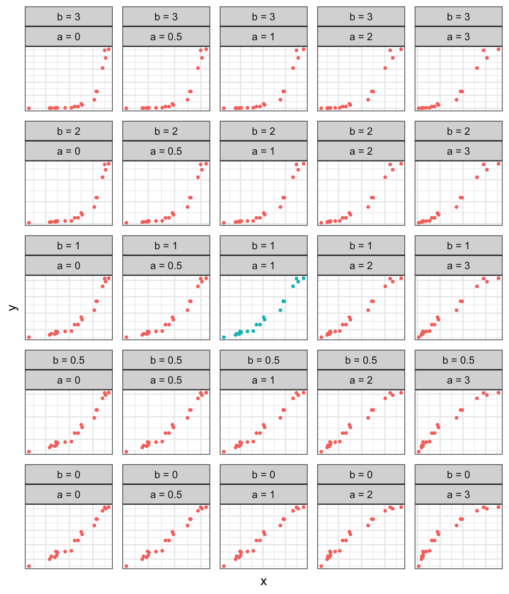

One part of regression model diagnostics is to check the fitted model’s \(R^2\) value, which gives an indication of the proportion of the variance in the response that has been “explained” by the model. A low value (closer to 0) means that data points are spread far around the best fit line; a high one (close to 1) means that data points are clustered very tightly around the line. A model with a low \(R^2\) value is not necessarily “bad” – it may still provide helpful information about a real relationship between your response and predictor. However, that relationship is very “noisy,” which means that your model will have poor predictive power – it will be unable to make predictions with the accuracy and precision you might hope for.
Often, the predictive power of a model, and the \(R^2\) value, can be improved by adding additional explanatory variables – that is, fitting a model with more than one explanatory variable. It could have two predictors, three, or as many as you can (sensibly) come up with. This kind of model is called multiple regression. Mathematically, it means fitting a model of the form:
Multiple regression often makes sense when you are studying a complex process where there is most likely “more than one thing going on.” For example, you might consider modelling population growth rates worldwide using a data set including a set of social, economic, health, and political indicators compiled using data from the World Health Organization and partner organizations. The dataset description is available online: http://www.exploredata.net/Downloads/WHO-Data-Set. One idea might be to look for a linear relationship between per-capita income and population growth rate:
# simplify some variable namesnames(whodat)[10] <-"PopGrowthRate"names(whodat)[6] <-"IncomePerCapita"names(whodat)[7] <-"FemaleSchoolEnrollment"gf_point(PopGrowthRate ~ IncomePerCapita, data = whodat)
Figure 8.1: Population growth rate and per capita income.
who.m1 <-lm(PopGrowthRate ~ IncomePerCapita, data = whodat)summary(who.m1)
Call:
lm(formula = PopGrowthRate ~ IncomePerCapita, data = whodat)
Residuals:
Min 1Q Median 3Q Max
-2.68051 -0.70998 -0.02006 0.70727 2.78944
Coefficients:
Estimate Std. Error t value Pr(>|t|)
(Intercept) 1.657e+00 1.048e-01 15.81 < 2e-16 ***
IncomePerCapita -2.867e-05 6.218e-06 -4.61 7.72e-06 ***
---
Signif. codes: 0 '***' 0.001 '**' 0.01 '*' 0.05 '.' 0.1 ' ' 1
Residual standard error: 1.041 on 176 degrees of freedom
(24 observations deleted due to missingness)
Multiple R-squared: 0.1077, Adjusted R-squared: 0.1027
F-statistic: 21.25 on 1 and 176 DF, p-value: 7.723e-06
The \(R^2\) value of this model is very low. But that could be because, unsurprisingly, there are many factors contributing to population growth rate, not just income. For example, what about education? Perhaps more-educated women have fewer children, lowering the population growth rate. So we might want to model population growth rate as a function of both income and education.
In R, a multiple regression model can be fitted with a call to lm(). We just add additional predictors to the right hand side of the model formula, separated by \(+\) signs. For the WHO example discussed above, for example, we could try:
who.m2 <-lm(PopGrowthRate ~ IncomePerCapita + FemaleSchoolEnrollment, data = whodat)summary(who.m2)
Call:
lm(formula = PopGrowthRate ~ IncomePerCapita + FemaleSchoolEnrollment,
data = whodat)
Residuals:
Min 1Q Median 3Q Max
-2.43374 -0.52979 0.06017 0.56619 2.48052
Coefficients:
Estimate Std. Error t value Pr(>|t|)
(Intercept) 4.095e+00 3.626e-01 11.293 < 2e-16 ***
IncomePerCapita -1.102e-05 6.028e-06 -1.827 0.0694 .
FemaleSchoolEnrollment -3.105e-02 4.504e-03 -6.894 1.06e-10 ***
---
Signif. codes: 0 '***' 0.001 '**' 0.01 '*' 0.05 '.' 0.1 ' ' 1
Residual standard error: 0.9086 on 167 degrees of freedom
(32 observations deleted due to missingness)
Multiple R-squared: 0.3101, Adjusted R-squared: 0.3018
F-statistic: 37.52 on 2 and 167 DF, p-value: 3.475e-14
We would need to follow up with our diagnostics to fully assess these two models, but comparison of the \(R^2\) values immediately shows that \(R^2\) is much higher for the second model. In other words, the multiple regression has succeeded in explaining more of the variance in population growth rates than the simple linear regression with only one predictor.
8.2 Violations of Linear Regression Assumptions
In the previous chapter, we learned how to carry out regression diagnostics – to check whether or not the assumptions of linear regression analysis were valid for a particular analysis. If the assumptions are violated, then the conclusions (parameter estimates, but especially standard errors) will be incorrect, and the model results can not be trusted.
For each type of violation, there are some fixes or modifications we can try in order to fit a valid, trustworthy model to our data and still draw reliable conclusions. In this course, we will focus mainly on one type of “fix”: applying transformations to linearize non-linear relationships, and allow us to apply linear regression to the transformed data. This approach is covered in detail in the rest of this chapter.
Before beginning our detailed discussion of transformation, we will briefly discuss several other types of “fixes”. The mathematical foundations of these more complex models are essentially beyond the scope of this class, but you should understand when they might be useful (for example, if you see a certain type of pattern in residual diagnostic plots, which technique might help solve the problem?) and be able to implement them in R.
The table below provides an overview of various problems you might uncover as you do regression diagnostics, along with possible solutions. Each entry in the table is covered in a bit more detail in the subsequent sections of this chapter.
Transform explanatory and or response variables. Alternative: fit a non-linear model using the R function nls()
Independence of errors
ACF plot indicates strong dependence of errors over time (or space)
Fit an “autoregressive” model, where this relationship between subsequent or nearby measurements is expected and accounted for. To do this in R, replace lm(y ~ x) with something like gls(y ~ x, correlation = corAR1(form = ~ 1)).
Normality of errors
Residual QQ plots indicates departure from normality
First check if other assumptions may also be violated, and try options listed there. If that fails, you may need to add additional predictor variables to your model; or to fit a generalized linear model, a more sophisticated type of regression that we will not cover in here.
Equal Variance (homeoskedasticity)
Variance of errors is not constant over the full range of response values, or over time
First, make sure that the linearity assumption is not violated. Next, if you have the option of including additional predictors in your model, it may be helpful. Next, transforming the response variable may help. Finally, if none of those options provide a solution, you can fit a model with non-constant error variance. For example, if variance increases with fitted response values, you can replace lm(y ~ x) with something like nls(y ~ x, weights = varPower())
8.3 Non-Normal Errors
Sometimes, during diagnostics for a linear regression model, you will find that residual quantile-quantile plots indicate that linear regression residuals are far from normally distributed. In this case, before trying to modify your model in any way, it is useful to check whether any other assumptions of the linear regression have also been violated. If they have, it is worthwhile to try to deal with those problems first, and see if solving them makes the residuals more normal.
If non-normal residuals are the only apparent problem with a linear regression model, adding additional explanatory variables might help in some cases. Most of the time, you would have to turn to a more sophisticated regression model called a generalized linear model (GLM). Fitting GLMs is beyond the scope of this class, and you will not be asked to do it.
8.4 Non-Independence of Errors
Sometimes, regression diagnostics (particularly a plot of residuals as a function of time, or an ACF plot) will show that the residuals are not independent. This happens most often when the predictor variable is a temporal or spatial one; data points collected at similar times, or similar locations, are often similar to each other rather than independent.
We will consider a simple example using the price of chicken over time (in constant dollars, adjusted for inflation over time). It seems to make sense to try to predict the price of chicken as a function of time (it’s been getting progressively cheaper for the last century or so):
chickn <-read.csv("https://sldr.netlify.app/data/chickn.csv")gf_point(Price ~ Year, data = chickn ) |>gf_lm()chick.mod <-lm(Price ~ Year, data = chickn)summary(chick.mod)
Call:
lm(formula = Price ~ Year, data = chickn)
Residuals:
Min 1Q Median 3Q Max
-57.07 -20.23 -4.75 13.20 79.98
Coefficients:
Estimate Std. Error t value Pr(>|t|)
(Intercept) 5792.6918 329.9948 17.55 <2e-16 ***
Year -2.9123 0.1685 -17.29 <2e-16 ***
---
Signif. codes: 0 '***' 0.001 '**' 0.01 '*' 0.05 '.' 0.1 ' ' 1
Residual standard error: 28.48 on 68 degrees of freedom
Multiple R-squared: 0.8146, Adjusted R-squared: 0.8119
F-statistic: 298.8 on 1 and 68 DF, p-value: < 2.2e-16
However, there seems to be a problem with non-independence of the residuals. Price is not independent from year to year; if you know the price was a bit high one year, it’s likely to remain so for the next several years:
acf(resid(chick.mod))
This is a big problem, because it tends to result in standard error estimates that are artificially small. In other words: we think we have estimated our slope and intercept parameters much more precisely than we really have, and would report falsely narrow confidence intervals. To fix the problem, we can consider replacing our simple linear regression: \[
y ~ \beta_0 + \beta_1x + \epsilon
\] (where \(\epsilon \sim N(0, \sigma)\)) with a model that expects that subsequent residuals to depend on previous ones, so that the residual for the data point collected at time \(t\) is: \[
e_t = \rho e_{t-1} + \epsilon
\] (where, still, \(\epsilon \sim N(0, \sigma)\); and \(\rho\) is a new parameter indicating how strong the dependence over time is.) This is called an AR(1) process, or an auto-regressive process of order 1. It can be fit easily in R using the function gls() instead of . gls() does “generalized least-squares” fitting, and is found in the package nlme. The function call syntax illustrated in this example will work any time the explanatory variable is the time (or space) one that is causing the non-independence.
library(nlme)chick.mod2 <-gls(Price ~ Year, data = chickn, correlation =corAR1(form =~1))summary(chick.mod2)
Generalized least squares fit by REML
Model: Price ~ Year
Data: chickn
AIC BIC logLik
557.8043 566.6823 -274.9022
Correlation Structure: AR(1)
Formula: ~1
Parameter estimate(s):
Phi
0.9483234
Coefficients:
Value Std.Error t-value p-value
(Intercept) 4764.172 1600.4333 2.976802 0.0040
Year -2.387 0.8171 -2.921499 0.0047
Correlation:
(Intr)
Year -1
Standardized residuals:
Min Q1 Med Q3 Max
-1.0593757 -0.5673406 -0.1571088 0.3360972 2.0991647
Residual standard error: 41.39414
Degrees of freedom: 70 total; 68 residual
If you plot the residuals of this new model, and plot the ACF, you will see that the correlation coefficients still have high values. However, in the new gls() fit, this correlation has now been taken into account in the standard errors (which are larger – compare the coefficient tables to verify it), so it is OK now to trust the model parameter estimates and predictions.
Sometimes, model diagnostics for a linear regression indicate that variance of errors is not constant over the full range of response values. Often, it is the case that the error variance grows larger as the predicted response value grows larger, resulting in a “trumpet-like” shape in the plot of residuals versus fitted values.
If you spot this problem, first, make sure that the linearity assumption is not violated. Next, if you have the option of including additional predictors in your model, it may be helpful. Next, transforming the response variable may help. Specifically, a log or square-root transformation of the response variable may be useful. (See more details and examples later in this chapter, when transformations are discussed in detail.)
Finally, if none of the previous options provide a solution, you can fit a model that actually expects and accounts for non-constant error variance. We will not cover this topic in any detail, but this brief example is included for your future reference (outside this class). Example: if variance increases with fitted response values, you can fit an appropriate model with the gls function from the nlme package. To do so, replace lm(y ~ x) with something like nls(y ~ x, weights = varPower()).
Here is a brief example, using the Ornstein dataset from the car package. It gives data on 248 Canadian companies, collected in the mid-1970s. The variable assets gives each company’s assets in millions of dollars, and interconnects gives the number of director and executive positions that are shared with other firms. A scatter plot shows that the richest companies have many of these “interlocks”, so we might model assets as a function of interlocks…however, the residuals have non-constant variance:
library(car)gf_point(assets ~ interlocks, data = Ornstein)
om <-lm(assets ~ interlocks, data = Ornstein)gf_point(resid(om) ~fitted(om))
We can try to correct for this problem by fitting a model that “expects” this non-constant variance, by using the function gls with the input weights = varPower(). (There are many other ways to model non-constant error variance; this small example gives you just a taste, and for this course, you would not be expected to deal with any cases other than ones like this, where error variance increases with fitted values.)
om2 <-gls(assets ~ interlocks, data = Ornstein, weights =varPower())
As with the non-independence case, if you plot the residuals for this model, you will see that they DO still have non-constant variance…but again, now it is OK because our model has taken it into account, and computed parameter estimates and standard errors appropriately.
8.6 Non-linear Relationships
The rest of this chapter will provide detailed information on how to deal with some non-linear relationships in regression.
Linear regression assumes a linear relationship between predictor and response variables, but not all relationships between pairs of quantitative variables are linear. There are two common ways to deal with nonlinear relationships:
Transform the data before beginning linear regression analysis, so that there is a linear relationship between the (transformed) variables.
Fit a model that explicitly expects, and accounts for, the nonlinear relationship between the two variables.
8.7 Transformations in Linear Regression
8.7.1 Reasons for Using Transformations
The applicability of linear models can be extended through the use of various transformations of the data. There are several reasons why one might consider a transformation of the predictor or response (or both).
To correspond to a theoretical model.
Sometimes we have a priori information that tells us what kind of non-linear relationship we should anticipate. For example, an experiment to estimate Planck’s constant (\(\hbar\)) using LED lights and a voltage meter is based on the relationship
\[
V_a = \frac{\hbar c }{e \lambda} + k
\]
where \(V_a\) is the activation voltage (the voltage at which the LED just begins to emit light), \(c\) is the speed of light, \(e\) is the energy of an electron, \(\lambda\) is the frequency of the light emitted, and \(k\) is a constant that relates to the energy losses inside the semiconductor’s p-n junction. If we take \(c\) and \(e\) as known for now (in a fancier version we would work their uncertainties into this, too), we can design an experiment that measures \(V_a\) and \(\lambda\) for a number of different colors.
A little algebra gives us
\[
V_a = \frac{\hbar c }{e} \cdot \frac{1}{\lambda} + k
\]
So if we fit a model with \(V_a\) as the response and \(\frac{1}{\lambda}\) as the predictor, then the slope and intercept of the resulting least squares regression line will give us an estimate for \(\frac{\hbar c }{e}\), from which we can solve for \(\hbar\). (Note: if we know uncertainties for \(c\), for \(e\), and for the slope, we can compute an estimated uncertainty for \(\hbar\) using our propagation of uncertainty methods.)
Theory says that a scatter plot of \(V_a\) and \(1/\lambda\) should form a straight line, so the model we would fit would look something like
lm(voltage ~I(1/wavelength), data = mydata)
We need to wrap 1/lambda in I() because the arithmetic symbols (+, -, *, /, and ^) have special meanings inside the formula for a model. I() stands for inhibit special interpretation.
Notice that the intercept is not directly involved in estimating \(\hbar\), but that we can’t fit the line and obtain our slope without it.
Many non-linear relationships can be transformed to linearity. Exercise 8.2 presents several more examples and asks you to determine a suitable transformation.
To obtain a better fit.
If a scatterplot or residual plot shows a clearly non-linear pattern to the data, then it would be inappropriate to fit a linear regression (and conclusions drawn from that model would be incorrect and misleading). In the absence of theoretical reasons to expect a particular mathematical relationship between the variables being studied, we may select transformations based on the shape of the relationship as revealed in a scatterplot. Section 8.7.4 provides some guidance for selecting transformations in this situation.
To obtain better residual behavior.
Sometimes transformations are used to improve the agreement between the data and the assumptions about the error terms in the model. For example, if the variance in the response appears to increases as the predictor increases, a logarithmic or square root transformation of the response may decrease the disparity in variance.
In practice, all three of these issues are intertwined. A transformation that improves the fit, for example, may or may not have a good theoretical interpretation. Similarly, a transformation performed to achieve homoskedasticity (equal variance; the opposite is called heteroskedasticity) may result in a fit that does not match the overall shape of the data very well. Despite these potential problems, there are many situations where a relatively simple transformation is all that is needed to greatly improve the model. Here, when we say “improve” the model, we mean that the assumptions of the model are satisfied, and the model fits the data acceptably well.
8.7.2 Three Important Laws
In the sciences, relationships between variables based on some scientific theory are often referred to as “laws”. Many of these fall into one of three categories that are easily handled by transforming the data and fitting a linear regression model.
8.7.2.1 Linear Laws
We’ve already talked about linear relationships, but it is worth mentioning them again because there are so many situations in which a linear relationship arises.
8.7.2.2 Power Laws
Relationships of the form \[
y = A x^p
\] are often called power laws. The two parameters are the exponent \(p\) and a constant of proportionality \(A\). Power laws can be linearized by taking logarithms: \[
\log(y) = \log(A x^p) = \log(A) + p \log(x)
\] So if we fit a model of the form
lm(log(y) ~log(x))
Then \(\beta_0 = \log(A)\) and \(\beta_1 = p\). If a power law is a good fit for the data then
gf_point( log(y) ~log(x) )
will produce a roughly linear plot.
Fitting a power law results in estimates for the parameters \(\beta_0 = \log(A)\) and \(\beta_1 = p\). Note that we can use logarithms with any base for this transformation. Typically natural logarithms are used (that’s what log() does in R). In some specific applications we might use base 10 logarithms (log10() in R) or base 2 logarithms (log2() in R); this yields the commonly used scale for \(\beta_0 = \log(A)\), the constant of proportionality.
Some common situations that are modeled with power laws include drag force vs speed, velocity vs. force, and frequency vs. force.
8.7.2.3 Exponential Laws
Relationships of the form \[
y = A B^x = A e^{Cx}
\] are often called exponential laws. The two parameters are the base \(B = e^C\) and a constant of proportionality \(A\). Exponential laws can also be linearized by taking logarithms: \[
\log(y) = \log(A B^x) = \log(A) + x \log(B)
\] So if we fit a model of the form
lm(log(y) ~ x)
Then \(\beta_0 = \log(A)\) and \(\beta_1 = \log(B) = C\). If an exponential law is a good fit for the data then
gf_point( log(y) ~ x )
will produce a roughly linear plot.
Fitting an exponential law results in estimates for the parameters \(\beta_0 = \log(A)\) and \(\beta_1 = \log(B) = C\). Again, we will generally use natural logarithms. In this course, if you see a log() without an indication of the base of the logarithm, you can assume it is base “e”, a natural logarithm. Similarly, remember that for R, the function log() takes the natural logarithm.
Some common situations that are modeled with exponential laws include population growth and radioactive decay. Note that exponential growth models are typically only good approximations over a limited range since exponential functions eventually grow quickly, and often some external constraints will limit this growth. For example, a culture of bacteria may grow roughly exponentially for a while, but eventually, limits on space and nourishment will make it impossible for exponential growth to continue.
8.7.2.4 Log-log and semi-log plots
Graphs of \(\log(y)\) vs. \(\log(x)\) (log-log) or \(\log(y)\) vs \(x\) (semi-log) can be used to assess whether the power law or exponential law appears to apply in a given situation. If the law were a perfect description of the situation, all the points on the log-log or semi-log plot would fall along a straight line. In practice, the fit won’t be perfect, but the plot is a useful diagnostic. For example, you can compare a plot of \(y\) as a function of \(x\) with a log-log or semi-log plot, and see which one shows the most linear relationship between the two variables.
In the old days, before computers could readily transform the data, special graph paper was produced with semi-log or log-log scales to facilitate this sort of plot. R can easily create plots with transformed scales. Use gf_refine() with input scales_*_log10() to your call to gf_point(), as detailed in the example below:
As expected, the log-log transformation makes things linear. Of course, with real data, the fit won’t be perfect like this.
8.7.3 Other Models That Can Be Transformed to Linear
The three laws above are not the only kinds of relationships that can be transformed to linear.
Example 8.1 A chemical engineering text book suggest a law of the form \[
\log( - \frac{dC}{dt} ) = \log(k) + \alpha \log(C)
\] where \(C\) is concentration and \(t\) is time.
This is equivalent to \[
\begin{aligned}
- \frac{dC}{dt} &= k \cdot C^\alpha
\\
- \int C^{-\alpha} \; dC &= \int k \;dt
\\
- \frac{1}{1-\alpha} C^{1-\alpha} &= k t + d
\\
\frac{1}{\beta} C^{-\beta} & = k t + d
\\
C^{-\beta} & = \beta k t + \beta d
\end{aligned}
\]
If we know \(\beta = \alpha - 1\) (i.e., if we know \(\alpha\)), then we can fit a linear model using
lm(C^(-beta) ~ t)
The intercept of such a model will be \(\beta d\) and the slope will be \(\beta k\), from which we can easily recover \(d\) and \(k\).
Alternatively, if we know \(d = 0\) (i.e., if we know that \(C = 0\) when \(t = 0\)), then we can use \[
\begin{aligned}
\log( C^{-\beta} ) = -\beta \log(C) &= \log(\beta k t ) = \log(\beta k) + \log t
\\
\log(C) &= - \frac{\log(\beta k)}{\beta} - \frac{1}{\beta} \log t
\end{aligned}
\]
Now if we fit a model of the form
lm(log(C) ~log(t))
the intercept will be \(\frac{-\log(\beta k)}{\beta}\) and the slope will be \(\frac{-1}{\beta}\). From this we can solve for \(k\) and \(\beta\).
Example 8.2 Continuing the previous example, we will fit the following data
under the assumption that \(\alpha = 2\), so \(\beta = 1\). In this case, our relationship becomes \[
\frac{1}{C} = k t + d \;.
\] We can now fit a model and see how well it does.
conc.model <-lm(1/concentration ~ time, data = Concentration)summary(conc.model)
Call:
lm(formula = 1/concentration ~ time, data = Concentration)
Residuals:
1 2 3 4 5 6 7
-1.175e-04 -4.144e-05 8.281e-05 2.259e-04 -3.128e-05 -3.398e-05 -8.447e-05
Coefficients:
Estimate Std. Error t value Pr(>|t|)
(Intercept) 2.012e-02 8.762e-05 229.6 2.97e-11 ***
time 1.248e-04 4.860e-07 256.8 1.70e-11 ***
---
Signif. codes: 0 '***' 0.001 '**' 0.01 '*' 0.05 '.' 0.1 ' ' 1
Residual standard error: 0.0001286 on 5 degrees of freedom
Multiple R-squared: 0.9999, Adjusted R-squared: 0.9999
F-statistic: 6.593e+04 on 1 and 5 DF, p-value: 1.7e-11
confint(conc.model)
2.5 % 97.5 %
(Intercept) 0.0198922974 0.0203427516
time 0.0001235447 0.0001260434
This provides estimates for the intercept \(\beta d = d\) and the slope \(\beta k = k\)
of our model (because we are assuming that \(\beta = 1\); in the general case, we could divide by \(\beta\) to obtain estimates for \(d\) and \(k\).)
Of course, we should always look to see whether the fit is a good fit.
gf_point(resid(conc.model) ~fitted(conc.model))
gf_qq( ~resid(conc.model)) |>gf_qqline()
Notice that these residuals are very small relative to the values for concentration. (We can see this from the vertical scale of the plot and also from the small value for residual standard error in the summary output.) The shape of the residual plot would be more disturbing if the magnitudes were larger and if there were more data. As is, even if there is some systematic problem, it is roughly five orders of magnitude smaller than our concentration measurements, which likely can’t be measured to that degree of accuracy.
If we want to show the fit on top of the original data, we must remember to untransform the response, since the model we fitted is a model for \(1/C\), but we want to show a model for \(C\):
gf_point( concentration ~ time, data = Concentration ) |>gf_line( 1/fitted(conc.model) ~ time, data = Concentration)
8.7.4 The Ladder of Re-expression
Sometimes we have data for which there is no theory (yet) to suggest the form of a model. In such a case, we may let the data help suggest a model. If we find a model that fits well, we can return to the question of whether there is an explanation for that type of model.
In the 1970s, Mosteller and Tukey (Tukey (1977), Mosteller and Tukey (1977)) introduced what they called the ladder of re-expression and bulge rules that can be used to suggest an appropriate transformation to improve the fit when the relationship between two variables (\(x\) and \(y\) in our examples) is monotonic and has a single bend. Their idea was to apply a power transformation to \(x\) or \(y\) or both – that is, to work with \(x^a\) and \(y^b\) for an appropriate choice of \(a\) and \(b\). Tukey called this ordered list of transformations the ladder of re-expression. The identity transformation has power \(1\). The logarithmic transformation is a special case and is included in the list associated with a power of \(0\). The direction of the required transformation can be obtained from Figure 8.2 and Table 8.1, which shows four bulge types, represented by the curves in each of the four quadrants. A bulge can potentially be straightened by applying a transformation to one or both variables, moving up or down the ladder as indicated by the arrows. More severe bulges require moving farther up or down the ladder. –> A curve bulging in the same direction as the one in the first quadrant of Figure 8.2, for example, might be straightened by moving up the ladder of transformations for \(x\) or \(y\) (or both), while a curve like the one in the second quadrant, might be straightened by moving up the ladder for \(y\) or down the ladder for \(x\).
Figure 8.2: Tukey and Mosteller’s bulging rule
Table 8.1: Ladder of re-expression
power
transformation
\(\vdots\)
\(\vdots\)
\(3\)
\(x \mapsto x^3\)
\(2\)
\(x \mapsto x^2\)
\(1\)
\(x \mapsto x\)
\(\frac12\)
\(x \mapsto \sqrt{x}\)
\(0\)
\(x \mapsto \log(x)\)
\(-1\)
\(x \mapsto \frac1x\)
\(-2\)
\(x \mapsto \frac{1}{x^2}\)
\(\vdots\)
\(\vdots\)
This method focuses primarily on transformations designed to improve the overall fit. The resulting models may or may not have a natural, or obvious, interpretation. These transformations also affect the shape of the distributions of the explanatory and response variables and, more importantly, of the residuals from the linear model (see Exercise 8.3). When several different transformations lead to reasonable linear fits, these other factors may lead us to prefer one over another.
Example 8.3 Q. The scatterplot in Figure 8.3 shows a curved relationship between \(x\) and \(y\). What transformations of \(x\) and \(y\) improve the linear fit?

Figure 8.3: A scatterplot illustrating a non-linear relationship between \(x\) and \(y\).
A. This type of bulge appears in quadrant IV of Figure 8.2, so we can hope to improve the fit by moving up the ladder for \(x\) or down the ladder for \(y\). As we see in Figure 8.4, the fit generally improves as we move down and to the right – but not too far, lest we over-correct. A \(\log\)-transformation of the response (\(a = 1\), \(b = 0\)) seems to be especially good in this case. Not only is the resulting relationship quite linear, but the residuals appear to have a better distribution as well.

Figure 8.4: Using the ladder of re-expression to find a better fit.
Example 8.4 Some physics students conducted an experiment in which they dropped steel balls from various heights and recorded the time until the ball hit the floor. We begin by fitting a linear model to this data.
ball.model <-lm(time ~ height, data = BallDrop)summary(ball.model)
Call:
lm(formula = time ~ height, data = BallDrop)
Residuals:
Min 1Q Median 3Q Max
-0.0200108 -0.0089383 0.0001623 0.0082016 0.0186519
Coefficients:
Estimate Std. Error t value Pr(>|t|)
(Intercept) 0.190243 0.004303 44.21 <2e-16 ***
height 0.251841 0.005516 45.66 <2e-16 ***
---
Signif. codes: 0 '***' 0.001 '**' 0.01 '*' 0.05 '.' 0.1 ' ' 1
Residual standard error: 0.01009 on 28 degrees of freedom
Multiple R-squared: 0.9867, Adjusted R-squared: 0.9863
F-statistic: 2085 on 1 and 28 DF, p-value: < 2.2e-16
gf_point(time ~ height, data = BallDrop) |>gf_lm()
gf_point(resid(ball.model) ~fitted(ball.model))
At first glance, the large value of \(r^2\) and the reasonably good fit in the scatterplot might leave us satisfied that we have found a good model. But a look at the residual plot reveals a clear curvilinear pattern in this data. A knowledgeable physics student knows that (ignoring air resistance) the time should be proportional to the square root of the height. This transformation agrees with Tukey’s ladder of re-expression, which suggests moving down the ladder for height or up the ladder for time.
ball.modelT <-lm(time ~sqrt(height), data = BallDrop)summary(ball.modelT)
Call:
lm(formula = time ~ sqrt(height), data = BallDrop)
Residuals:
Min 1Q Median 3Q Max
-0.0087773 -0.0038851 0.0000571 0.0030558 0.0125552
Coefficients:
Estimate Std. Error t value Pr(>|t|)
(Intercept) 0.016078 0.004084 3.937 0.000498 ***
sqrt(height) 0.430803 0.004863 88.580 < 2e-16 ***
---
Signif. codes: 0 '***' 0.001 '**' 0.01 '*' 0.05 '.' 0.1 ' ' 1
Residual standard error: 0.005225 on 28 degrees of freedom
Multiple R-squared: 0.9964, Adjusted R-squared: 0.9963
F-statistic: 7846 on 1 and 28 DF, p-value: < 2.2e-16
gf_point(time ~sqrt(height), data = BallDrop) |>gf_lm(time ~sqrt(height), data = BallDrop)
gf_point(resid(ball.modelT) ~fitted(ball.modelT))
This model does indeed fit better, but the residual plot indicates that there may be some inaccuracy in the measurement of the height. In this experiment, the apparatus was set up once for each height and then several observations were made. So any error in this set-up affected all time measurements for that height in the same way. This could explain why the residuals for each height are clustered the way they are since it violates the assumption that the errors are independent. (See Example 8.5 for a simple attempt to deal with this problem.)
Example 8.5 One simple way to deal with the lack of independence in the previous example is to average all the readings made at each height. (This works reasonably well in our example because we have nearly equal numbers of observations at each height.) We pay for this data reduction in a loss of degrees of freedom, but it may be easier to justify that the errors in average times at each height are independent (if we believe that the errors in the height set-up are independent and not systematic).
Call:
lm(formula = time ~ sqrt(height), data = BallDropAvg)
Residuals:
1 2 3 4 5 6
0.0039552 -0.0040318 0.0028227 -0.0051717 0.0001571 0.0022686
Coefficients:
Estimate Std. Error t value Pr(>|t|)
(Intercept) 0.016078 0.007404 2.172 0.0956 .
sqrt(height) 0.430803 0.008816 48.863 1.05e-06 ***
---
Signif. codes: 0 '***' 0.001 '**' 0.01 '*' 0.05 '.' 0.1 ' ' 1
Residual standard error: 0.004236 on 4 degrees of freedom
Multiple R-squared: 0.9983, Adjusted R-squared: 0.9979
F-statistic: 2388 on 1 and 4 DF, p-value: 1.05e-06
gf_point(time~ height, data = BallDropAvg) |>gf_lm()
gf_point(resid(ball.modelA) ~fitted(ball.modelA))
Using a square root transformation on averaged height measurements in the BallDrop data gives a similar fit but a very different residual plot. The interpretation of this model is also different.
Notice that the parameter estimates are essentially the same as in the preceding example. The estimate for \(\sigma\) has decreased some. This makes sense since we are now estimating the variability in averaged measurements rather than in individual measurements.
Of course, we’ve lost a lot of degrees of freedom, and as a result, the standard error for our parameter estimate is about twice as large as before. This might have been different; had the mean values fit especially well, our standard error might have been smaller despite the reduced degrees of freedom.
One disadvantage of the data reduction is that it is hard to interpret the residuals (because there are fewer of them). At first glance there appears to be a downward trend in the residuals, but this is largely driven by the fact that the largest residual happened to be for the smallest fit.
Example 8.6 Q. Rex Boggs of Glenmore State High School in Rockhampton, Queensland, had an interesting hypothesis about the rate at which bar soap is used in the shower. He writes:
I had a hypothesis that the daily weight of my bar of soap [in grams] in my shower wasn’t a linear function, the reason being that the tiny little bar of soap at the end of its life seemed to hang around for just about ever. I wanted to throw it out, but I felt I shouldn’t do so until it became unusable. And that seemed to take weeks.
Also I had recently bought some digital kitchen scales and felt I needed to use them to justify the cost. I hypothesized that the daily weight of a bar of soap might be dependent upon surface area, and hence would be a quadratic function .
The data ends at day 22. On day 23 the soap broke into two pieces and one piece went down the plughole.
The data indicate that although Rex showered daily, he failed to record the weight for some of the days.
What do the data say in regard to Rex’s hypothesis?
A. Rex’s assumption that weight should be a (quadratic) function of time does not actually fit his intuition. His intuition corresponds roughly to the differential equation \[
\Partial{t}{W} = k W^{2/3}\,,
\] for some negative constant \(k\) since the rate of change should be proportional to the surface area remaining. (We are assuming that the bar shrinks in such a way that its shape remains proportionally unaltered.) Solving this equation (by separation of variables) gives \[
W^{1/3} = k t + C
\;.
\] We can fit untransformed and transformed models (weight^(1/3) ~ day) to this data and compare.
soap.model1 <-lm(weight ~ day, data = Soap)summary(soap.model1)
Call:
lm(formula = weight ~ day, data = Soap)
Residuals:
Min 1Q Median 3Q Max
-6.2436 -1.2950 0.3078 1.3942 5.5040
Coefficients:
Estimate Std. Error t value Pr(>|t|)
(Intercept) 123.1408 1.3822 89.09 <2e-16 ***
day -5.5748 0.1068 -52.19 <2e-16 ***
---
Signif. codes: 0 '***' 0.001 '**' 0.01 '*' 0.05 '.' 0.1 ' ' 1
Residual standard error: 2.949 on 13 degrees of freedom
Multiple R-squared: 0.9953, Adjusted R-squared: 0.9949
F-statistic: 2724 on 1 and 13 DF, p-value: < 2.2e-16
The scatterplot in Figure 8.5 (darker line) indicate that the untransformed model is already a good fit.1
soap.model2 <-lm(I(weight^(1/3)) ~ day, data = Soap)summary(soap.model2)
Call:
lm(formula = I(weight^(1/3)) ~ day, data = Soap)
Residuals:
Min 1Q Median 3Q Max
-0.31107 -0.13666 0.01605 0.15044 0.20095
Coefficients:
Estimate Std. Error t value Pr(>|t|)
(Intercept) 5.297706 0.083813 63.21 < 2e-16 ***
day -0.146980 0.006477 -22.69 7.67e-12 ***
---
Signif. codes: 0 '***' 0.001 '**' 0.01 '*' 0.05 '.' 0.1 ' ' 1
Residual standard error: 0.1788 on 13 degrees of freedom
Multiple R-squared: 0.9754, Adjusted R-squared: 0.9735
F-statistic: 515 on 1 and 13 DF, p-value: 7.669e-12
Figure 8.5: Comparing untransformed (darker) and transformed (lighter) fits to soap use data.
The transformed model in this case actually fits worse. The higher value of \(r^2\) for the untransformed model is an indication that the untransformed model explains a larger proportion of the variance in soap weights. It is left as an exercise for you to examine diagnostic plots of the model residuals in both cases; you should see that neither one looks markedly better than the other. (There is perhaps an issue with a small amount of non-independence, or correlation over time, of the residuals; we might expect that with data collected over time. However, the dataset is so small that it is hard to tell for sure if the problem is real and worth worrying about.) Figure 8.5 shows a scatterplot with both fits. The data do not support Rex’s assumption that a transformation is necessary. The scatterplot and especially the residual plots both show that the residuals are mostly positive near the ends of the data and negative near the center. Part of this is driven by a flattening of the pattern of data points near the end of the measurement period. Perhaps as the soap became very small, Rex used slightly less soap than when the soap was larger. Exercise 8.1 asks you to remove the last few observations and see how that affects the models.
Finally, since a linear model appears to fit at least reasonably well (but see Exercise 8.1), we can give a confidence interval for \(\beta_1\), the mean amount of soap Rex uses each shower. –> –>
confint(soap.model1)
2.5 % 97.5 %
(Intercept) 120.154672 126.126895
day -5.805514 -5.344014
8.8 Nonlinear Least Squares
Another approach to non-linear relationships is called nonlinear least squares or nonlinear regression. In this approach, instead of attempting to transform the relationship until it becomes linear, we fit a nonlinear function by minimizing the the sum of the squared residuals relative to that (parameterized) nonlinear function (form). That is, our model now becomes \[
y = f(x) + \varepsilon
\] where \(f\) may be any parameterized function.
The R function for fitting these models is nls(). This function works much like lm(), but there are some important differences:
Because the model does not have to be linear, we have to use a more verbose description of the model.
Numerical optimization is used to fit the model, and the algorithm used needs to be given a reasonable starting point for its search. Specifying this starting point simultaneously lets R know what the parameters of the model are. (Each quantity with a starting value is considered a parameter, and the algorithm will adjust all the parameters looking for the best fit – i.e., the smallest MSE (and hence also the smallest SSE and RMSE).
Let’s illustrate with an example.
Example 8.7 Returning to the ball dropping experiment, let’s fit \[
\begin{aligned}
\texttt{time} &= \alpha_0 + \alpha_1 \sqrt{\texttt{height}}
\end{aligned}
\tag{8.1}\]
Notice how the model formula compares with the formula in (@eq-balldrop).
The starting point for the algorithm is specified with
`start = list(alpha0 = 0, alpha1 = 1)`, which also declares
the parameters to be fit.
We can obtain the coefficients of the fitted model with
nls.model
Nonlinear regression model
model: time ~ alpha0 + alpha1 * sqrt(height)
data: BallDrop
alpha0 alpha1
0.01608 0.43080
residual sum-of-squares: 0.0007645
Number of iterations to convergence: 1
Achieved convergence tolerance: 2.112e-07
or
coef(nls.model)
alpha0 alpha1
0.01607833 0.43080348
A more complete summary can be obtained by
summary(nls.model)
Formula: time ~ alpha0 + alpha1 * sqrt(height)
Parameters:
Estimate Std. Error t value Pr(>|t|)
alpha0 0.016078 0.004084 3.937 0.000498 ***
alpha1 0.430803 0.004863 88.580 < 2e-16 ***
---
Signif. codes: 0 '***' 0.001 '**' 0.01 '*' 0.05 '.' 0.1 ' ' 1
Residual standard error: 0.005225 on 28 degrees of freedom
Number of iterations to convergence: 1
Achieved convergence tolerance: 2.112e-07
We can restrict our attention to the coefficients table with
coef(summary(nls.model))
Estimate Std. Error t value Pr(>|t|)
alpha0 0.01607833 0.004084015 3.936894 4.975519e-04
alpha1 0.43080348 0.004863416 88.580433 7.732182e-36
f <-makeFun(nls.model)gf_point(time ~ height, data = BallDrop) |>gf_fun(f(height) ~ height, color ='gray40')
gf_point(resid(nls.model) ~fitted(nls.model))
We can compare this to the ordinary least squares model by plotting both together on the same plot.
lm.model <-lm(time ~sqrt(height), data = BallDrop)g <-makeFun(lm.model)gf_point(time ~ height, data = BallDrop) |>gf_fun(f(height) ~ height, color ='gray80', size =1.5) |>gf_fun(g(height) ~ height, color ='red', size =0.5, linetype =2)
Warning: Using `size` aesthetic for lines was deprecated in ggplot2 3.4.0.
ℹ Please use `linewidth` instead.
In this particular case, there is very little difference between the two models, but this is not always the case.
coef(nls.model)
alpha0 alpha1
0.01607833 0.43080348
coef(lm.model)
(Intercept) sqrt(height)
0.01607833 0.43080348
Example 8.8 Here is example where we fit a different model to the BallDrop data, namely \[
\texttt{time} = \alpha * \texttt{height}^p
\]
power.model <-nls(time ~ alpha * height^power, data = BallDrop, start =c(alpha =1, power = .5))coef(summary(power.model))
Estimate Std. Error t value Pr(>|t|)
alpha 0.4472102 0.001342627 333.08590 6.333427e-52
power 0.4796679 0.005805313 82.62567 5.387914e-35
A power law can also be fit using lm() by using a log-log transformation.
power.model2 <-lm(log(time) ~log(height), data = BallDrop)coef(summary(power.model2))
Estimate Std. Error t value Pr(>|t|)
(Intercept) -0.807610 0.004330482 -186.49426 7.101233e-45
log(height) 0.471911 0.006424548 73.45435 1.431476e-33
Again, the parameter estimates (and uncertainties) are very similar. Recall that to compare our intercept in the second model to the \(\alpha\) value in the first model, we must untransform:
exp(coef(power.model2)[1])
(Intercept)
0.4459225
We can use the delta method to estimate the uncertainty. Since \(\frac{d}{dx} e^x = e^x\) the uncertainty is approximately \[
0.4459225 \cdot 0.0043305
=
0.0019311
\]
Example 8.9 In addition to comparing estimated parameters and their uncertainties, we should always look at the residuals of our model. For both the linear regression and the nonlinear least squares models, the assumption is that the error terms are independent, normally distributed, and have a common standard deviation. From the plots below we see
The nonlinear least squares model is a better match for these assumptions than the linear regression model.
Both models reveal a lack of independence – at a given height, the residuals move up or down as a cluster as was discussed in the previous section. Neither model is designed to handle this flaw in the design of the experiment.
Now let’s take a look at an example where we need the extra flexibility of the nonlinear least squares approach.
Example 8.10 A professor at Macalester College put hot water in a mug and recorded the temperature as it cooled. Let’s see if we can fit a reasonable model to this data
gf_point(temp ~ time, data = CoolingWater, ylab ="temp (C)", xlab ="time (sec)")
Our first guess might be some sort of exponential decay
cooling.model1 <-nls(temp ~ A *exp( -k * time), data = CoolingWater, start =list(A =100, k =0.1))f1 <-makeFun(cooling.model1)gf_point(temp ~ time, data = CoolingWater, xlim =c(-50, 300), ylim =c(0, 110), ylab ="temp (C)", xlab ="time (sec)") |>gf_fun(f1(time) ~ time)
That doesn’t fit very well, and there is a good reason. The model says that eventually the water will freeze because \[
\lim_{t \to \infty} A e^{-k t} = 0
\] when \(k >0\). But clearly our water isn’t going to freeze sitting on a lab table. We can fix this by adding in an offset to account for the ambient temperature:
cooling.model2 <-nls(temp ~ ambient + A *exp(k * (1+time)), data = CoolingWater,start =list(ambient =20, A =80, k =-.1) )f2 <-makeFun(cooling.model2)gf_point(temp ~ time, data = CoolingWater, xlim =c(-50, 300), ylim =c(0, 110),ylab ="temp (C)", xlab ="time (sec)") |>gf_fun(f1(time) ~ time, linetype =2, color ="gray80") |>gf_fun(f2(time) ~ time, color ="steelblue")
This fits much better. Furthermore, this model can be derived from a differential equation \[
\frac{dT}{dt} = -k (T_0 - T_{\mathrm{ambient}})
\;,
\] known as Newton’s Law of Cooling.
Let’s take a look at the residual plot
gf_point(resid(cooling.model2) ~ time, data = CoolingWater)
mplot(cooling.model2, which =1)
mplot() doesn't know how to handle this kind of input.
use methods("mplot") to see a list of available methods.
Hmm. These plots show a clear pattern and very little noise. The fit doesn’t look as good when viewed this way. It suggests that Newton’s Law of Cooling does not take into account all that is going on here. In particular, there is a considerable amount of evaporation (at least at the beginning when the water is warmer). More complicated models that take this into account can fit even better. For a discussion of a model that includes evaporation, see http://stanwagon.com/public/EvaporationPortmannWagonMiER.pdf.2
8.8.1 Choosing Between Linear and Non-linear Models
So how do we choose between linear and non-linear models? Let’s enumerate some of the differences between them:
Some models cannot be expressed as linear models, even after transformations.
In this case we only have one option, the non-linear model.
Linear models can be fit quickly and accurately without numerical optimization algorithms because they satisfy nice linear algebra properties.
The use of numerical optimizers in non-linear least squares models makes them subject to potential problems with the optimizers. They may not converge, may converge to the wrong thing, or convergence may depend on choosing an appropriate starting point for the search.
The two types of models make different assumptions about the error terms.
In particular, when we apply transformations to achieve a linear model, those transformations often affect the distribution of the error terms as well. For example, if we apply a log-log transformation to fit a power law, then the model is
\[
\begin{aligned}
\log( y ) &= \beta_0 + \beta_1 \log(x) + \varepsilon
\\
y &= e^{\beta_0} x^{\beta_1} e^\varepsilon
\\
y &= \alpha x^{\beta_1} e^\varepsilon
\end{aligned}
\]
So the errors are multiplicative rather than additive and they have a normal distribution after applying the logarithmic transformation. This implies that the relative errors should be about the same magnitude rather than the absolute errors.
This is potentially very different from the nonlinear model where the errors are additive:
\[
y = \alpha x^\beta + \varepsilon
\]
Plots of residuals vs. fits and qq-plots for residuals can help us diagnose whether the assumptions of a model are reasonable for a particular data set.
Linear models provide an easy way to produce confidence intervals for a mean response or an individual response.
The models fit using nls() do not have this capability.
8.9 Exercises
Ball drop, revisited
In Example 8.7, we applied a square root transformation to the height. Is there another transformation that yields an even better fit?
Exercise 8.1 Soap, revisited
Remove the last few days from the Soap data set and refit the models in Example 8.6. How much do things change? Do the residuals look better, or is there still some cause for concern?
Exercise 8.2 Transformations
For each of the following relationships between a response \(y\) and an explanatory variable \(x\), if possible find a pair of transformations \(f\) and \(g\) so that \(g(y)\) is a linear function of \(f(x)\): \[
g(y) = \beta_0 + \beta_1 f(x) \;.
\] For example, if \(y = a e^{bx}\), then \(\log(y) = \log(a) + bx\), so \(g(y) = \log(y)\), \(f(x) = x\), \(\beta_0= \log(a)\), and \(\beta_1 = b\).
\(y = a b^x\).
\(y = a x^b\).
\(y = \frac{1}{a + bx}\).
\(y = \frac{x}{a + bx}\).
\(y = a x^2 + b x + c\).
\(\displaystyle y = \frac{1}{1+e^{a+bx}}\).
\(\displaystyle y = \frac{100}{1+e^{a+bx}}\).
\(\log(y) = \log(a) + x \log(b)\), so \(g(y) = \log(y)\), \(f(x) = x\), \(\beta_0 = \log(a)\), and \(\beta_1 = \log(b)\).
\(\log(y) = \log(a) + b \log(x)\), so \(g(y) = \log(y)\), \(f(x) = \log(x)\), \(\beta_0 = \log(a)\), and \(\beta_1 = b\).
\(\frac{1}{y} = a + b x\), so \(g(y) = \frac{1}{y}\), \(f(x) = x\), \(\beta_0 = a\), and \(\beta_1 = b\).
\(\frac{1}{y} = \frac{a}{x} + b\), so \(g(y) = \frac{1}{y}\), \(f(x) = \frac{1}{x}\), \(\beta_0 = b\), and \(\beta_1 = a\).
Errors and transformations What happens to the role of the error terms (\(\varepsilon\)) when we transform the data? For each transformation from Exercise 8.2, start with the form \[
g(y) = \beta_0 + \beta_1 f(x) + \varepsilon
\] and transform back into a form involving the untransformed \(y\) and \(x\) to see how the error terms are involved in these transformed linear regression models.
It is important to remember that when we fit a linear model to transformed data, the usual assumptions of the model are that the errors in the (transformed) linear form are additive and normally distributed. The errors may appear differently in the untransformed relationship.
Exercise 8.3 Tukey bulge and skew
The transformations in the ladder of re-expression also affects the shape of a distribution.
If a distribution is symmetric, how does the shape change as we move up the ladder?
If a distribution is symmetric, how does the shape change as we move down the ladder?
If a distribution is left skewed, in what direction should we move to make the distribution more symmetric?
If a distribution is right skewed, in what direction should we move to make the distribution more symmetric?
Moving up the ladder will spread the larger values more than the smaller values, resulting in a distribution that is right skewed.
Exercise 8.4 Pendulum
By attaching a heavy object to the end of a string, it is easy to construct pendulums of different lengths. Some physics students did this to see how the period (time in seconds until a pendulum returns to the same location) depends on the length (in meters) of the pendulum. The students constructed pendulums of lengths varying from \(10\) cm to \(16\) m and recorded the period length (averaged over several swings of the pendulum). The resulting data are in the Pendulum data set in the fastR2 package.
Fit a power law to this data using a transformation and a linear model. How well does the power law fit? What is the estimated power in the power law based on this model?
Fit a power law to this data using a nonlinear model. How well does the power law fit? What is the estimated power in the power law based on this model?
Compare residual plots and normal-quantile plots for the residuals for the two models. How do the models compare in this regard?
At first glance, the two models might appear equally good. In each case the
power is a bit below 2 and the fits look good on top of the raw data.
<!-- (Note: the -->
<!-- function produced by `makeFun()` does not know how to invert the log -->
<!-- transformation on the response variable, so we have to do that ourselves.) -->
model <-lm(log(period) ~log(length), data = Pendulum)model2 <-nls(period ~ A * length^power, data = Pendulum, start =list(A =1, power =2))f <-makeFun(model)g <-makeFun(model2)gf_point(period ~ length, data = Pendulum) |>gf_fun(f(x) ~ x, col ='gray50')
gf_point(period ~ length, data = Pendulum) |>gf_fun(g(x) ~ x, col ='red', lty =2)
coef(summary(model))
Estimate Std. Error t value Pr(>|t|)
(Intercept) 0.7207055 0.006360981 113.3010 2.027047e-35
log(length) 0.4784757 0.003937676 121.5122 3.536212e-36
coef(summary(model2))
Estimate Std. Error t value Pr(>|t|)
A 2.0469760 0.02202717 92.92961 2.843896e-33
power 0.4827226 0.00482899 99.96348 4.610858e-34
But if we look at the residuals, we see that the linear model is clearly
better in this case. The non-linear model suffers from heteroskedasticity.
Both residual distributions are reasonably close to normal, but not perfect.
In the ordinary least squares model, the largets few residuals are not as large
as we would expect.
gf_qq( ~resid(model))
gf_qq( ~resid(model2))
The residuals in the non-linear model show a clear change
in variance as the fitted value increases. This is counteracted by the logarithmic
transformation of the explanatory variable. (In other cases, the non-linaer model
might have the preferred residual distribution.)
The estimated power based on the linear model is \(0.478 \pm 0.004\).
Exercise 8.5 Vapor pressure
The pressure data set contains data on the relation between temperature in degrees Celsius and vapor pressure in millimeters (of mercury). With temperature as the predictor and pressure as the response, use transformations or nonlinear models as needed to obtain a good fit. Make a list of all the models you considered and explain how you chose your best model. What does your model say about the relationship between pressure and temperature?
Using Tukey’s buldge rules it is pretty easy to land at something like one of the following
gf_point(log(pressure) ~ temperature, data = pressure)
gf_point(log(pressure) ~log(temperature), data = pressure)
Neither of these is pefect (although both are much more linear than the original untransformed relationship). But if you think in degrees Kelvin instead, you might find a much better transformation.
gf_point(log(pressure) ~ (273.15+ temperature), data = pressure)
gf_point(log(pressure) ~log(273.15+ temperature), data = pressure)
gf_point(log(pressure) ~1/(273.15+ temperature), data = pressure)
Ah, that last one looks quite good. Let’s try that one.
model <-lm(log(pressure) ~I(1/(273.15+ temperature)), data = pressure)mplot(model, 1:2)
[[1]]
`geom_smooth()` using formula = 'y ~ x'
[[2]]
Things still aren’t perfect. There’s a bit of a bow in the residual plot, but the size of the residuals is quite small relative to the scale of the log-of-pressure values:
range( ~resid(model))
[1] -0.0745625 0.1517124
range( ~log(pressure), data = pressure)
[1] -8.517193 6.692084
Also the residual for the fourth observation is quite a bit larger than the rest.
Exercise 8.6 Fertilizing corn
The cornnit data set in the package faraway contains data from a study investigating the relationship between corn yield (bushels per acre) and nitrogen (pounds per acre) fertilizer application in Wisconsin. Using nitrogen as the predictor and corn yield as the response, use transformations (if necessary) to obtain a good fit. Make a list of all the models you considered and explain how you chose your best model.
Exercise 8.7 ACT and GPA
The data set ACTgpa (in the fastR2 package) contains the ACT composite scores and GPAs of some randomly selected seniors at a Midwest liberal arts college.
Give a 95% confidence interval for the mean ACT score of seniors at this school.
Give a 95% confidence interval for the mean GPA of seniors at this school.
Use the data to estimate with 95% confidence the average GPA for all students who score 25 on the ACT.
Suppose you know a high school student who scored 30 on the ACT. Estimate with 95% confidence his GPA as a senior in college.
Are there any reasons to be concerned about the analyses you have just done? Explain.
We can build a confidence interval for the mean by fitting a model with only an intercept term.
grades <- ACTgpaconfint(lm(ACT ~1, data = grades))
2.5 % 97.5 %
(Intercept) 24.24932 27.90453
But this isn’t the only way to do it. Here are some other ways.
# here's another way to do it; but you don't need to know about itt.test(grades$ACT)
One Sample t-test
data: grades$ACT
t = 29.386, df = 25, p-value < 2.2e-16
alternative hypothesis: true mean is not equal to 0
95 percent confidence interval:
24.24932 27.90453
sample estimates:
mean of x
26.07692
# or you can do it by handx.bar <-mean( ~ ACT, data = grades); x.bar
[1] 26.07692
n <-nrow(grades); n
[1] 26
t.star <-qt(.975, df = n-1); t.star
[1] 2.059539
SE <-sd( ~ ACT, data = grades) /sqrt(n); SE
[1] 0.887387
ME <- t.star * SE; ME
[1] 1.827608
So the CI is $26.0769231 \pm 1.8276077$. Of course, that is too many digits, we
should do some rounding to
$26.1 \pm 1.8$.
gf_point(GPA ~ ACT, data = grades) |>gf_lm(interval ="confidence") |>gf_lm(interval ="prediction")
::: {.cell-output .cell-output-stderr} Warning: Using the `size` aesthietic with geom_ribbon was deprecated in ggplot2 3.4.0. ℹ Please use the `linewidth` aesthetic instead. :::
::: {.cell-output .cell-output-stderr} `geom_smooth()` using method = 'loess' :::
::: {.cell-output-display} ::: :::
There are no major concerns with the regression model. The
residuals look pretty good. (There is perhaps a bit more variability
in GPA for the lower ACT scores and if you said you were worried about
that, I would not argue.)
The prediction intervals are very wide and hardly useful, however.
It's pretty hard to give a precise estimate for an individual
person -- there's just too much variability from preson to person,
even among people with the same ACT score.
Exercise 8.8 Drag force
In the absence of air resistance, a dropped object will continue to accelerate as it falls. But if there is air resistance, the situation is different. The drag force due to air resistance depends on the velocity of an object and operates in the opposite direction of motion. Thus as the object’s velocity increases, so does the drag force until it eventually equals the force due to gravity. At this point the net force is \(0\) and the object ceases to accelerate, remaining at a constant velocity called the terminal velocity.
Now consider the following experiment to determine how terminal velocity depends on the mass (and therefore on the downward force of gravity) of the falling object. A helium balloon is rigged with a small basket and just the right ballast to make it neutrally buoyant. Mass is then added and the terminal velocity is calculated by measuring the time it takes to fall between two sensors once terminal velocity has been reached.
The Drag data set (in the fastR2 package) contains the results of such an experiment conducted by some undergraduate physics students. Mass is measured in grams and velocity in meters per second. (The distance between the two sensors used for determining terminal velocity is given in the height variable.)
By fitting models to this data, determine which of the following “drag laws” matches the data best:
Drag is proportional to velocity.
Drag is proportional to the square of velocity.
Drag is proportional to the square root of velocity.
Drag is proportional to the logarithm of velocity.
The best of these four models is a model that says drag is proportional to the square of velocity. Given the design of the experiment, it makes the most sense to fit velocity as a function of drag force. Here are several ways we could do the fit:
model1 <-lm(velocity^2~ force.drag, data = Drag)model2 <-lm(velocity ~sqrt(force.drag), data = Drag)model3 <-lm(log(velocity) ~log(force.drag), data = Drag)
coef(summary(model1))
Estimate Std. Error t value Pr(>|t|)
(Intercept) -0.06227051 0.221930683 -0.2805854 7.804746e-01
force.drag 0.08399767 0.002320596 36.1965958 3.448978e-32
coef(summary(model2))
Estimate Std. Error t value Pr(>|t|)
(Intercept) -0.03585585 0.054832417 -0.653917 5.169073e-01
sqrt(force.drag) 0.29097916 0.006806886 42.747762 5.239126e-35
coef(summary(model3))
Estimate Std. Error t value Pr(>|t|)
(Intercept) -1.1622713 0.04539588 -25.60301 2.020737e-26
log(force.drag) 0.4744661 0.01241003 38.23248 4.103776e-33
Note that model1, model2, and model3 are not equivalent, but they all tell roughly the same story.
f1 <-makeFun(model1)f2 <-makeFun(model2)f3 <-makeFun(model3)gf_point(velocity ~ force.drag, data = Drag) |>gf_fun(sqrt(f1(x)) ~ x, alpha = .4) |>gf_fun(f2(x) ~ x, alpha = .4, color ='red') |>gf_fun(f3(x) ~ x, alpha = .4, color ='brown')
The fit for these models reveals some potential errors in the design of this experiment. Separating out the data by the height used to determine velocity suggests that perhaps some of the velocity measurements are not yet at terminal velocity. In both groups, the velocities for the greatest drag forces are not as fast as the pattern of the remaining data would lead us to expect.
gf_point(velocity^2~ force.drag, data = Drag, color =~ height)
mplot(model1, w =1)
`geom_smooth()` using formula = 'y ~ x'
gf_point(log(velocity) ~log(force.drag), data = Drag, color =~ height)
gf_point(velocity ~ force.drag, data = Drag, color =~ height) |>gf_refine(scale_x_log10(), scale_y_log10())
mplot(model3, w =1)
`geom_smooth()` using formula = 'y ~ x'
Exercise 8.9 Drag force, revisited
Construct a plot that reveals a likely systematic problem with the Drag (see Exercise 8.8) data set. Speculate about a potential cause for this.
See previous problem.
Exercise 8.10 Drag force, subsetting the data
Exercise 8.9 suggests that some of the data should be removed before analyzing the Drag data set. Redo Exercise 8.8 after removing this data.
Exercise 8.11 Spheres
The Spheres data set (in the fastR2 package) contains measurements of the diameter (in meters) and mass (in kilograms) of a set of steel ball bearings. We would expect the mass to be proportional to the cube of the diameter. Fit a model and see if the data reflect this.
Exercise 8.12 More spheres
The Spheres data set (in the fastR2 package) contains measurements of the diameter (in meters) and mass (in kilograms) of a set of steel ball bearings. We would expect the mass to be proportional to the cube of the diameter. Using appropriate transformations fit two models: one that predicts mass from diameter and one that predicts diameter from mass. How do the two models compare?
Exercise 8.13 Utilities
The Utilities data set has information from utilities bills at a Minnesota residence. Fit a linear model that predicts thermsPerDay from temp.
What observations should you remove from the data before doing the analysis? Why?
Are any transformations needed?
How happy are you with the fit of your model? Are there any reasons for concern?
Interpret your final model (even if it is with some reservations listed in part c). What does it say about the relationship between average monthly temperature and the amount of gas used at this residence? What do the parameters represent?
Mosteller, F., and J. Tukey. 1977. Data Analysis and Regression. Addison-Wesley.
Tukey, John W. 1977. Exploratory Data Analysis. pub-aw:adr: pub-aw.
For now, it suffices to know that larger values of \(r^2\) generally indicate a better fit. We will discuss \(r^2\) and what it measures Section 10.3.↩︎
The model with evaporation adds another complication in that the resulting differential equation cannot be solved algebraically, so there is no algebraic formula to fit with nls(). But the method of least squares can still be used by creating a parameterized numerical function that computes the sum of squares and using a numerical minimizer to find the optimal parameter values. Since the use of numerical differential equation solvers is a bit beyond the scope of this course, we’ll leave that discussion for another day.↩︎